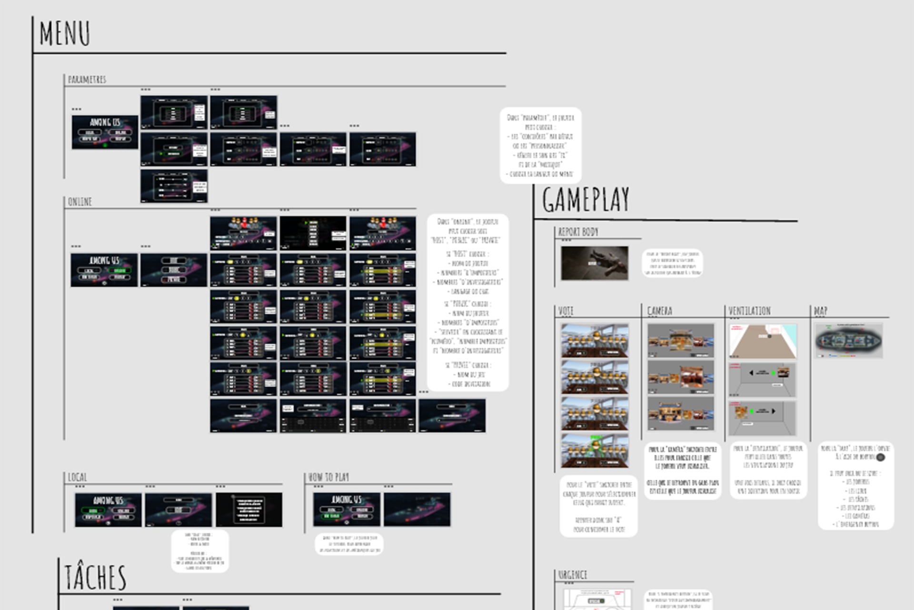
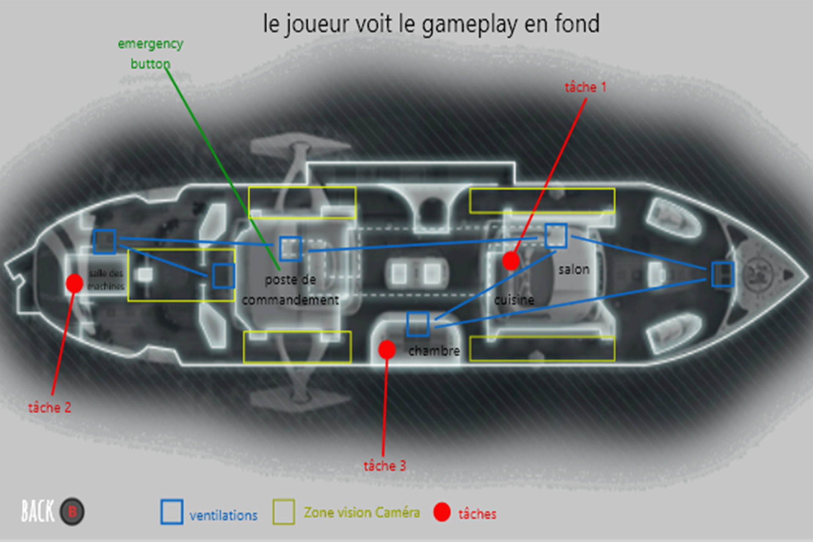
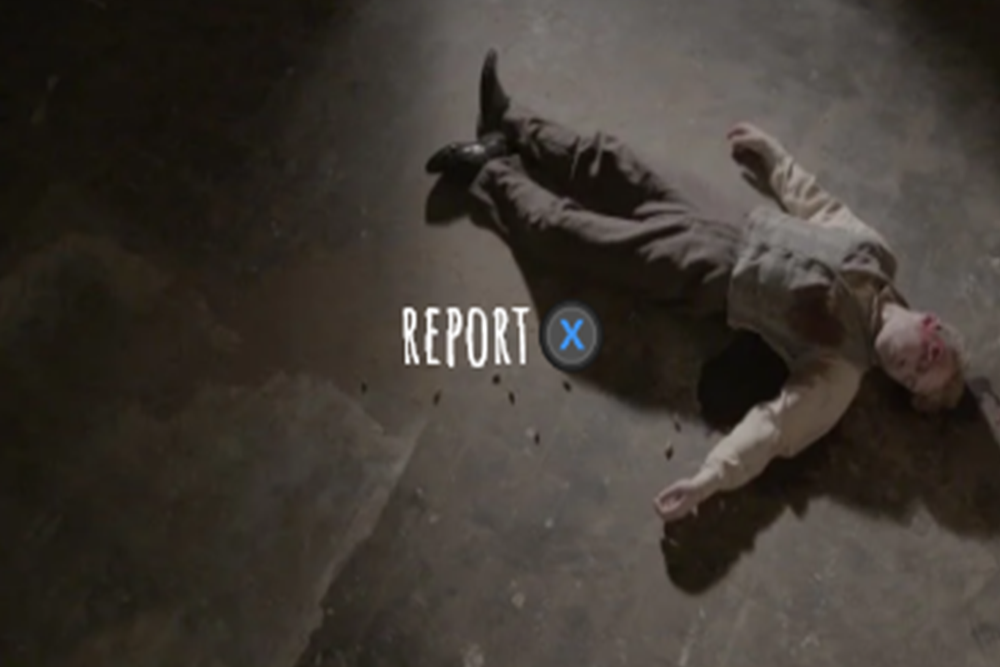
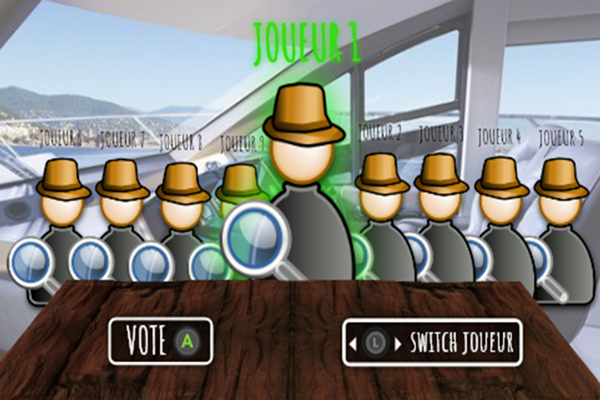
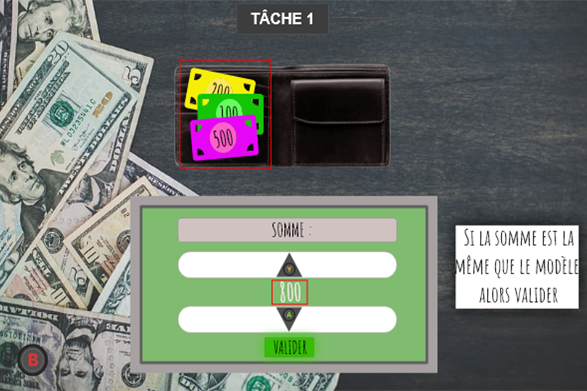
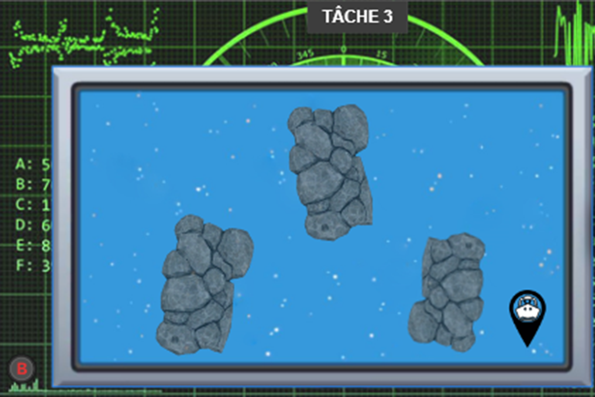
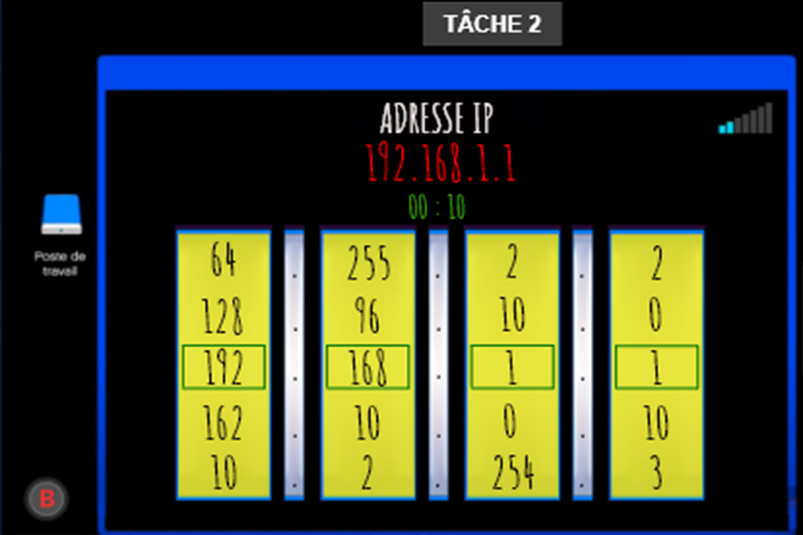

UI DESIGN
Adobe XD
Tests comparatifs.
Design Thinking · UI Design · UX Design
Découvrez le projet UI/UX design de Among Us FPS réalisé via mes études à ObjecTif 3D, un exercice de refonte de l'interface utilisateur du jeu culte dans une perspective FPS.

Among Us est mon premier gros projet spécialisé Interface Utilisateur. Je n’ai travaillé que sur un seul logiciel. Je devais trouver une idée de thème en élaborant le pitch, les intentions, la DA et surtout les contraintes avec la vue FPS.
Une fois trouvé, j’ai retranscrit le gameplay des imposteurs et de l’équipage en trouvant des tâches in game. J’ai fini par tout réaliser sur Adobe XD en détaillant tous les éléments (schémas, feedbacks, condition victoire et défaite).






Adobe XD
Voir le prototype Adobe XDUI DESIGN
Adobe XD
Tests comparatifs.

Assets
Photoshop
Retouches graphiques.

Organisation
Drive
Centralisation docs.